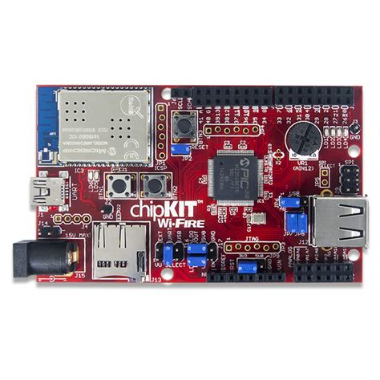

chipKIT Wi-FIRE

The chipKIT Wi-FIRE development board
This the documentation page for NuttX support of the chipKIT Wi-FIRE board.
Features
Microchip PIC32MZ2048EFG100 MCU @200MHz
Microchip MRF24WG0MA Wi-Fi module
USB 2.0
Full-Speed / Hi-Speed OTG controller,
Micro SD card connector
32-bit MIPS M5150 operation
2MB flash memory
512KB RAM
Installation
The following toolchain options have been tested and confirmed to work:
CONFIG_MIPS32_TOOLCHAIN_PINGUINOL: Pinquino Toolchain for LinuxCONFIG_MIPS32_TOOLCHAIN_SOURCERY_CODEBENCH_LITE: Sourcery CodeBench Lite Toolchain for Linux
Pinquino Toolchain can be downloaded here: https://github.com/PinguinoIDE/pinguino-compilers
Sourcery CodeBench Lite Toolchain for Linux can be downloaded and installed as follows:
$ wget https://sourcery.mentor.com/GNUToolchain/package12725/public/mips-sde-elf/mips-2014.05-24-mips-sde-elf-i686-pc-linux-gnu.tar.bz2
$ sudo tar xvjf mips-2014.05-24-mips-sde-elf-i686-pc-linux-gnu.tar.bz2 \
-C /usr/local
Flashing
Warning
Currently the pre-installed bootloader of the chipKIT Wi-FIRE board is not supported in this NuttX configuration. Doing the following steps will erase the factory installed bootloader in the Flash memory! If you are going to recover the bootloader later on your chipKIT Wi-FIRE board, the original chipKIT bootloader can be found here: https://reference.digilentinc.com/_media/chipkit_wifire/chipkit-wifire-v01000303.zip
Flash memory can be programmed with a PICkit 2 programmer via the 6-pin ICSP connector JP1 of chipKIT Wi-FIRE board.
A program is needed to interface to the PICkit 2. One such program is the pic32prog utility: https://github.com/sergev/pic32prog.git
It is recommended to configure udev rules so that root privileges are not needed to use pic32prog; root privileges will only be needed for this one-time setup:
On most Linux distributions, add the user to the plugdev group:
$ sudo useradd -G plugdev $(whoami)
Create the file /etc/udev/rules.d/60-pickit.rules with this content (from http://kair.us/projects/pickitminus/):
# PICkit 2 ATTRS{idVendor}=="04d8", ATTRS{idProduct}=="0033", MODE="0660", GROUP="plugdev" # PICkit 3 ATTRS{idVendor}=="04d8", ATTRS{idProduct}=="900a", MODE="0660", GROUP="plugdev"Restart udev (or restart the computer):
On Debian:
$ sudo udevadm trigger
On Arch:
$ sudo udevadm control --reload && sudo udevadm trigger
If PICkit was already plugged into USB, unplug and replug it. Now NuttX can be flashed to the board as follows:
$ pic32prog nuttx.hex
Configurations
You can use the following command to configure the NuttX build, where
<config> is one of the configurations listed below:
$ ./tools/configure.sh -l chipkit-wifire:nsh
nsh
Basic serial console access to the NSH shell.
Note
Connect USB cable from your PC to connector J1 (labeled “UART”) of the chipKIT Wi-FIRE board. Then use some serial console client (minicom, picocom, teraterm, etc) configured to 115200 8n1 without software or hardware flow control.
Reset the board and you should see NuttX starting in the serial.